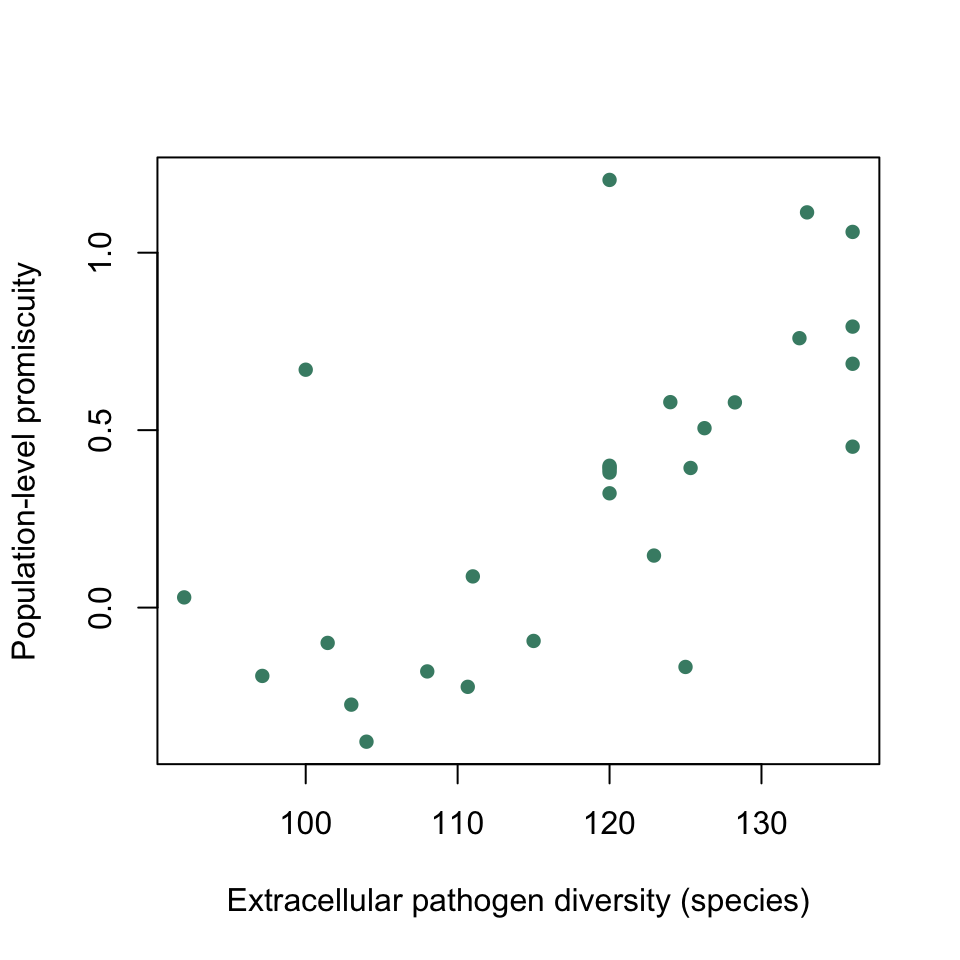
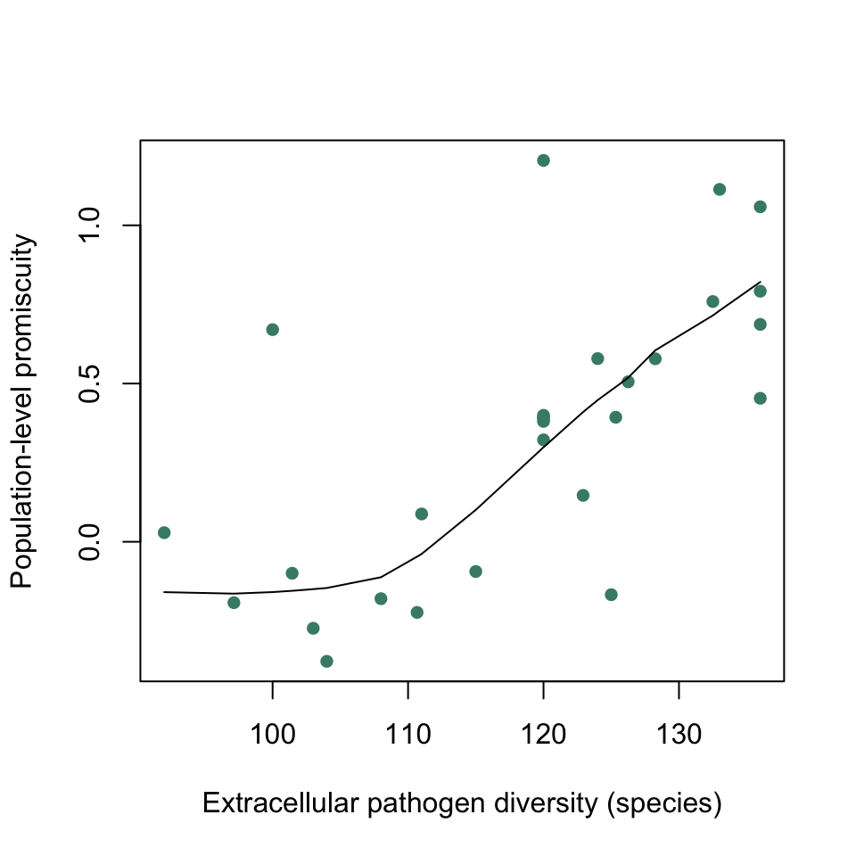

Correlation analysis explained
The video embedded here explains the way that we can calculate a correlation coefficient, what it means and how to test for statistical significance.
MHC promiscuity and pathogen diversity
The major Histocompatibility complex (MHC) is a region of the vertebrate genome encoding cell-surface proteins that are important in the recognition of foreign organisms such as bacteria and viruses by the immune system. Within humans, there is considerable genetic diversity in the alleles that encode for the MHC. One possible explanation for this is that t is driven by host-pathogen interactions, and one aspect of this that could be important is the variety of antigens which a particular MHC allele can bind to, with more “promiscuous” alleles being able to promote immune activity against a broader range of pathogens and so being more generalist. If these generalist alleles are favoured in regions of high pathogen diversity this could explain some of the geographical variation that is known to exist in MHC alleles. Máté Manczinger and co-workers tested this idea in a paper published in 20191. They collected allele prevalence data for the HLA-DRB1 MHC gene from a number of populations worldwide and used two methods to estimate the promiscuity for the gene for each population: firstly, they used bioinformatics techniques to predict the binding affinities for the alleles in question, and secondly they used empirical data on MHC binding in vitro, giving two separate measures. For each population they were then able to calculate the pathogen richness in the corresponding geographical area using publicly available data on the prevalence 168 extracellular pathogens (bacteria, fungi, protists and helminths). They also calculated similar data for intracellular pathogens such as viruses.
We’ll look at one of their two response variables the in-vitro promiscuity levels for the HLA-DRB1 gene, an estimate of how broad the antigen binding capabilities are at a population level. There are two explanatory variables, extracellular pathogen diversity and intracelullar pathogen diversity. Since intracellular pathogens are not exposed to the aspects of the immune response associated with the MHC, the prediction to be tested is that HLA-DRB1 promiscuity should correlate with extracellular but not intracellular pathogen diversity.
We can load the data into a data frame called mhc
mhc <- read.csv("https://github.com/rjknell/Basic_stats/raw/master/data/manczinger_2019.csv")As always, we need to check our data have loaded properly. Use str() to check the structure of the dataset.
str(mhc)All looks fine. Intracellular and Extracellular are the two pathogen diversity estimates. Promiscuity_pred is the predicted promiscuity from the bioinformatics study and Promiscuity_in_vivo is the promiscuity based on empirical lab tests. The units for promiscuity are abitrary because the values have been normalised, the units for pathogen diversity are in numbers of species. Some of the latter are fractional because of the way these were estimated.
We’re focussing on the in-vitro promiscuity, and whether this correlates with the extracellular and intracellular pathogen diversities. As always, we’ll start by drawing a graph and looking at the data. In this case, with two variables which are both continuous data, scatterplots are appropriate. Here is the first one, with in-vitro promiscuity plotted against extracellular pathogen diversity.
plot(Promiscuity_in_vitro ~ Extracellular,
data = mhc,
pch = 16,
col = "aquamarine4",
xlab = "Extracellular pathogen diversity (species)",
ylab = "Population-level promiscuity")
Figure 1 In-vitro MHC promiscuity for 28 human populations plotted against the local diversity of extracellular pathogens.
Looking at figure 1, we can see that there does indeed seem to be a general trend towards higher antigen binding promiscuity in regions with higher pathogen diversity.
Now for the intracellular pathogen diversity. See if you can adapt the code above to draw a new plot
# You can use the code for the first plot
# You need to change the name of the x-variable
# and the x-axis label# This is the solution
plot(Promiscuity_in_vitro ~ Intracellular,
data = mhc,
pch = 16,
col = "aquamarine4",
xlab = "Intracellular pathogen diversity (species)",
ylab = "Population-level promiscuity")Figure 2. In-vitro MHC promiscuity for 28 human populations plotted against the local diversity of intracellular pathogens.
Looking at this plot it’s much harder to see any relationship between the two variables. In both the intra- and extracellular cases, however, the data are fairly noisy and it would be helpful to to firstly quantify how strong the relationship between the two variables is and secondly to ask how likely such a pattern would be to arise simply by sampling error.
1. Manczinger, M., Boross, G., Kemény, L., Müller, V., Lenz, T.L., Papp, B. & Pál, C. (2019) Pathogen diversity drives the evolution of generalist MHC-II alleles in human populations. PLoS biology, 17, e3000131.
Calculating the correlation coefficient
In this section we’ll just consider the relationship between in-vitro promiscuity and extracellular pathogens. Let’s start by calculating r, the correlation coefficient.
The formula for r is somewhat intimidating:
\[ r = \left. \frac{\Sigma{\left(x-\bar{x}\right) \left(y-\bar{y}\right)}}{n-1} \right/s_xs_y, \]
but it can be broken down into more easily understood parts.
\[ \Sigma{\left(x-\bar{x}\right) \left(y-\bar{y}\right)} \]
Is the sum of the differences between the \(x\) and \(y\) values and their respective means. If there is a positive correlation this will give a positive value and if a negative correlation it will give a negative value. This number is dependent on the sample size, however, with larger samples giving larger values for the same sort of relationship just because there is more data.
\[ \frac{\Sigma{\left(x-\bar{x}\right) \left(y-\bar{y}\right)}}{n-1} \]
Is this value divided by the degrees of freedom (\(n-1\)) which corrects for sample size. This value is called the covariance, but it’s still not particularly useful here because it will vary depending on the scale that our data are measured on: if one of our variables was human height measured in mm, for example, we would get a larger value for the covariance than if it were human height measured in m.
\[ r = \left. \frac{\Sigma{\left(x-\bar{x}\right) \left(y-\bar{y}\right)}}{n-1} \right/s_xs_y, \]
is the covariance standardised by the product of the standard deviations of \(x\) and $y$. This takes out the effect of scale, and gives us a value for the correlation coefficient (technically in this case Pearson’s product-moment correlation coefficient but life’s too short for names that long) that will always be between -1 and 1, with -1 indicating a perfect negative correlation, 0 indicating no correlation and +1 indicating a perfect positive correlation. Let’s calculate \(r\) for our data. See if you can fill in the bits marked with XXXXX.
# Mean of x
mean_x <- mean(mhc$Extracellular)
# Mean of y
mean_y <- XXXXX
# Sample size
n1 <- length(mhc$Promiscuity_in_vitro)
# Standard deviation of x
sd_x <- sd(XXXXX)
# Standard deviation of y
sd_y <- sd(mhc$Promiscuity_in_vitro)
# Covariance
covar_xy <- sum((mhc$Extracellular - mean_x) * XXXXX)/(XXXXX -1)
# r
r1 <- XXXXX/(sd_x * sd_y)
# Print r
cat("The correlation coefficient is", r1)# Work your way methodically through the
# code, thinking about how it relates to
# the equations above.
# Everything you need to know is there,
# you just need to be careful about which
# variable is being used in each place.
# Remember, the x variable is mhc$Extracellular and
# the y variable is mhc$Promiscuity_pred
# Finally, be careful with your brackets# This is the solution
# Mean of x
mean_x <- mean(mhc$Extracellular)
# Mean of y
mean_y <- mean(mhc$Promiscuity_in_vitro)
# Sample size
n1 <- length(mhc$Promiscuity_in_vitro)
# Standard deviation of x
sd_x <- sd(mhc$Extracellular)
# Standard deviation of y
sd_y <- sd(mhc$Promiscuity_in_vitro)
# Covariance
covar_xy <- sum((mhc$Extracellular - mean_x) * (mhc$Promiscuity_in_vitro - mean_y))/(n1 -1)
# r
r1 <- covar_xy/(sd_x * sd_y)
# Print r
cat("The correlation coefficient is", r1)Hopefully you’ve got a value of 0.674. This is about what we’d expect given what we can see in the plot: a medium-strength positive correlation. What about testing this for significance?
Testing \(r\) for significance
You hopefully recall that when we calculate a sample mean \(\bar{x}\) we are producing an estimate of the population mean \(\mu\). In just the same way, the value of \(r\) that we’ve calculated is the sample correlation coefficient and is an estimate of the population correlation coefficient \(\rho\). The null hypothesis that we want to test in this case is that \(\rho\) = 0. In other words, if the overall, population-level pattern was that there were no correlation, we want to know the probability of seeing a sample correlation coefficient as big as we did (or one even more extreme).
When we were doing t-tests to compare two sample means, we calculated the effect which was the difference between means, and we standardised it by dividing our value by a figure that meant that if the null hypothesis were true we would expect it to be distributed on a \(t\) distribution. Having done that we could ask how likely we would be to see the value that we observed if the null hypothesis of no difference were true. We can do the same with \(r\), and in fact we can calculate a value based on \(r\) that we would expect to follow a t-distribution if the null hypothesis were true. This is calculated as:
\[ t = \frac{r \sqrt{n-2}}{\sqrt{1-r^2}}, \]
and if the null hypothesis were true we would expect it to be distributed on a \(t\) distribution with \(n-2\) degrees of freedom.
We know that r = 0.674 and n = 28, so try to calculate t.
t1 <- 0.674*sqrt(XXXXX - XXXXX) / sqrt(1 - XXXXX^2)
cat("The value of t is", t1)# This is the solution
t1 <- 0.674*sqrt(28 - 2) / sqrt(1 - 0.674^2)
cat("The value of t is", t1)All we need to do now is to calculate the probability of observing a value of of 4.65 or higher on a t distribution with 35 degrees of freedom.
2*pt(4.65, 28, lower.tail = FALSE)[1] 7.218187e-05So p = 0.0000722, a very small number indeed.
Using R’s built-in function
Of course, R has a built in function to do this analysis, namely cor.test(). All you have to do is to give it the names of the two variables in question as arguments and it’ll do the rest. NB because we’re not implying any direction of effect in a correlation analysis — the analysis does not make the assumption that promiscuity is caused by diversity or vice-versa — we don’t enter the variables to be analysed as a formula with a tilde ~, just as two arguments separated by commas.
cor.test(mhc$Promiscuity_in_vitro, mhc$Extracellular)This gives us the value of \(r\) at the bottom, labelled cor, 95% confidence intervals for our estimate of \(r\) (which we didn’t calculate) and further up the results the output of the t-test for significance. You can see that the values here are the same as the ones we calculated, give or take a little rounding error.
What about the relationship between in-vitro promiscuity and intracellular pathogen diversity? If you remember, the scatterplot for these data seemed to show little correlation, but we need to check this. The variables we want to look at are now mhc$Promiscuity_in_vitro and mhc$Intracellular.
cor.test(mhc$Promiscuity_in_vitro, mhc$Intracellular)Have a look at the results from this and compare them with the correlation with extracellular pathogen diversity. Have a go at this quiz.
Assumptions of correlation analysis and Spearman’s Rank Correlation Coefficient
As with all parametric analyses, the correlation analysis we’ve used depends on the data being analysed having certain properties. These assumptions are:
Data should be approximately normally distributed. Ideally, both of the variables being analysed should be normally distributed, so symmetrical and with the majority of the data close to the mean. In practice, this analysis is not affected by small deviations from normality in the data being analysed, especially when sample sizes are large. If there is obvious skew in one or both variables, however, or if there is some other substantial deviation from normality then you should think about whether this might be impacting your analysis.
Data should be continuously distributed. This sort of analysis works best when your data can take any value. If the data are categorial or otherwise constrained to only have a few values (Satisfied/neutral/dissatisfied or alive/dead or similar) then you shouldn’t using this sort of analysis. Integer data (e.g. counts of things) are OK so long as there’s a decent range: so if your data go from 12 to 127 with lots of different values that’s fine, but if you only have 0, 1 & 2 then probably not.
The relationship between the two variables should be approximately linear: in other words it should be roughly a straight line rather than a curve.
A further “assumption” that you’ll often see listed is that there should be no major outliers. This is a bit of a tricky one: anomalous data points will influence the output of the analysis, but of course we have to be very careful in designating data points “outliers” when they will often be legitimate observations that just happen to have rather extreme values. Rather than listing this as an “assumption” it’s probbaly better to just say that you should be aware that major outliers will have a big effect on your results.
If these assumptions are violated in a significant way then there are a number of options available. If the data are positively skewed or the relationship has some types of non-linearity then you might be able to apply some sort of transformation (a log transformation or a square root transformation will often deal with skewed data). Otherwise one popular option is to use a non-parametric equivalent of the Pearson’s correlation analysis, such as Spearman’s rank correlation coefficient. This is a quite simple variation of the parametric analysis: instead of analysing the values themselves, both variables are ranked from the smallest to the largest and a correlation coefficient is computed using the ranks. If you had a dataset like this:
set.seed(2112)
dat1 <- data.frame(matrix(data = round(rnorm(10, 10, 6),1), nrow = 5))
names(dat1) <- c("X1", "Y1")
print(dat1) X1 Y1
1 15.5 13.8
2 8.2 16.4
3 6.2 15.3
4 6.3 13.7
5 13.5 17.8You can extract the rankings for a variable with the rank() function:
rank(dat1$X1)[1] 5 3 1 2 4So for the first variable the lowest value is the third one, 6.2, so this has rank 1, the second lowest is 6.3 which has rank 2 and so on until we reach the highest value, 15.5, which has rank 5.
To calculate rs, the Spearman’s rank correlation coefficient, we can just plug these ranked data into an ordinary correlation analysis:
cor.test(rank(dat1$X1), rank(dat1$Y1))
Pearson's product-moment correlation
data: rank(dat1$X1) and rank(dat1$Y1)
t = 0.35355, df = 3, p-value = 0.7471
alternative hypothesis: true correlation is not equal to 0
95 percent confidence interval:
-0.828449 0.919940
sample estimates:
cor
0.2 or we can add the argument method = "spearman" without ranking the variables ourselves. We’re also adding a further argument which we wouldn’t normally use, exact = FALSE to make R calculate the p-value in the same way as for an ‘ordinary’ correlation: otherwise it’s calculated using a different method for this analysis.
cor.test(dat1$X1, dat1$Y1, method = "spearman", exact = FALSE)
Spearman's rank correlation rho
data: dat1$X1 and dat1$Y1
S = 16, p-value = 0.7471
alternative hypothesis: true rho is not equal to 0
sample estimates:
rho
0.2 The values for rs and the p-value we get are exactly the same for both methods so you can see how the Spearman’s analysis relates to the Pearson’s.
If you read the paper by Manczinger et al. which we used for the data we’ve analysed here you’ll see that they used the non-parametric Spearman’s rank correlation analysis rather than the Pearson’s for their data. Let’s have another look and think about why that might be. Here are the two scatterplots again.

What might be causing the original authors concern? Have a look at the plots and see what you think.
The main aspect of these data that might be causing a problem is possible non-linearity in the plot of MHC promiscuity versus Extracellular pathogen diversity — for low diversities, it seems that there is more of a flat relationship, which then becomes steeper at higher diversities. We can visualise this better by adding a non-parametric smoother to these data. Briefly, this is a technique which gives an indication of the trends in the data according to the data which are near a particular point rather than on the basis of the whole dataset, so it can show you changes in slope.
plot(Promiscuity_in_vitro ~ Extracellular,
data = mhc,
pch = 16,
col = "aquamarine4",
xlab = "Extracellular pathogen diversity (species)",
ylab = "Population-level promiscuity")
lines(lowess(x = mhc$Extracellular, y = mhc$Promiscuity_in_vitro))
You can see this better now. Is this a big enough and obvious enough departure from linearity to invalidate the correlation analysis? Maybe… one thing that we should mention is that this pattern was even stronger in the predicted MHC promiscuity data from the bioinformatics analysis, which we’ve not analysed here.
Let’s finish up by carrying out a Spearman’s analysis on MHC promiscuity as related to both intracellular and extracellular pathogen diversity.
# You can use the same code that we used for
# the parametric analysis, just with the
# method = "spearman" argument added
#
# Remember to check that there's a comma
# between all of your arguments and that
# all your brackets match# This is the solution
cor.test(mhc$Promiscuity_in_vitro, mhc$Extracellular, method = "spearman")
cor.test(mhc$Promiscuity_in_vitro, mhc$Intracellular, method = "spearman")